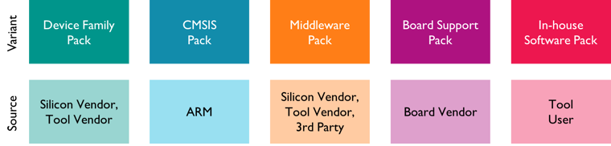
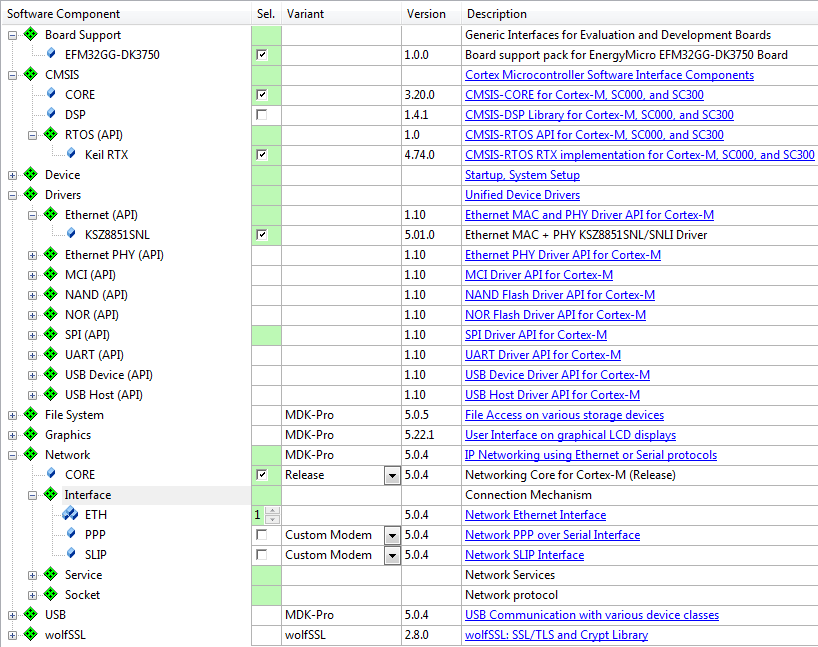

The CMSIS-Pack describes a delivery mechanism for software components, device parameters, and evaluation board support. It specifies with an XML-based package description (PDSC) file the content of a file collection that includes:
- Source code, header files, and software libraries
- Documentation and source code templates
- Device parameters along with startup code and programming algorithms
- Example projects The complete file collection along with the PDSC file is shipped in ZIP-format as a Software Pack. The PDSC file is designed for software development environments and describes the user and device relevant context for the files supplied within such a Software Pack.
Contents of a Software Pack
The CMSIS-Pack format is used to deliver a Software Pack and is aimed to be scalable for future requirements. It provides a management process and supports a tool independent distribution for:
- Device Support: for tool chains and software applications to target a specific device it requires:
- Information about the processor and it's features.
- Parameters, technical information, and data sheets about the device family and the specific devices.
- Device description and available peripherals.
- Memory layout of internal and external RAM and ROM address ranges.
- Flash algorithms for programming the device.
- Debug and trace configurations as well as System View Description files for device specific display of the memory mapped peripheral registers.
- C and assembly files for the device startup and access to the memory mapped peripheral registers.
- Board Support: for rapid development in the prototyping stage
- Information about the development board and it's features.
- Parameters, technical information, and data sheets about the board, the mounted microcontroller and peripheral devices.
- Drivers for on-board peripheral devices
- Software Components simplify the re-use of software and the management of 3rd party software. They contain:
- A collection of source modules, header and configuration files as well as libraries.
- Documentation of the software, including features and APIs.
- Example Projects can be used as a reference and starting point for similar applications. They contain:
- Fully defined application projects that work out of the box in the specified build and debug environments.
- Documentation about the purpose of the example, how to build, configure and execute the application.
- User Code Templates help to understand the basic concepts of a software component better and to give the user a good starting point for implementing his application.
- Note
- Configuration files for Software Components may use Configuration Wizard Annotations to enable GUI-like configuration controls.
All files that belong to a Software Pack are compressed into a *.PACK file using a standard ZIP file format. The content of each Software Pack is described in the Pack Description (*.PDSC) file that is part of each Pack. Refer to Pack Description (*.PDSC) Format for more information.
Software Pack Variants

Software Pack Variants
The figure above shows the following Software Packs:
- Device Family Pack: contains CMSIS system/startup files, drivers, and flash algorithms for a microcontroller device family. DFPs are usually provided by the silicon supplier or the tool vendor.
- CMSIS Software Pack: contains the generic CMSIS components (CORE, DSP Library, and RTOS implementation) supplied by ARM.
- Middleware Pack: contains the software components that belong to a middleware as source code or libraries.
- Board Support Pack (BSP): contains documentation, schematics, and drivers for a certain development board. It is usually provided by the board vendor.
- In-house Software Packs: usually contain software components that can be distributed within a company or engineering group. They are created by the tool users themselves.
Device Family Pack (DFP)
A Software Pack that contains Device Support is named Device Family Pack (DFP). A DFP may contain additional Software Components or Example Projects or any combination of those. The typical content of a DFP is:
- Device Support as described above.
- Software Components that configure the device and basic device drivers, in particular:
- CMSIS-compliant System and Startup files required to setup the C run-time library, device clock, and memory interface.
- Peripheral Driver Interfaces that provide software routines for physical device peripherals used by middleware stacks.
- Example Projects that show the usage of the device and its peripherals.
- User Code Templates that can be used as a starting point for application development.
A Device Family Pack (DFP) may be provided by a Silicon Vendor and is used to extend development tools with support for new devices. In general, the DFP enables Silicon Vendors to distribute tool independent device support for their device families.
CMSIS Software Pack
The CMSIS Software Pack contains the following CMSIS components:
- CMSIS-CORE: Basic run-time system for a Cortex-M device.
- CMSIS-DSP: Comprehensive software library with algorithms for digital signal processing.
- CMSIS-RTOS: Generic RTOS interface along with a reference implementation.
The CMSIS Software Pack is provided by ARM.
Board Support Pack (BSP)
A Software Pack that contains Board Support is named BSP. A BSP may contain additional Software Components, Example Projects, as well as Code Templates. The typical content of a BSP is:
- Source code, libraries, header/configuration files for the underlying hardware and documentation (for example user manuals, getting started guides, and schematics).
- Example Projects that show the usage of the development board and its peripherals.
- User Code Templates that can be used as a starting point for using the development board or the mounted device.
A Board Support Pack (BSP) may be provided by a Board Vendor and is used to extend development tools with support for new development boards. In general, the BSP enables Board Vendors to distribute tool independent board support for their development platforms.
Software Components
After installing a Software Pack, all included software components are available to the development tools. Software components are a collection of source modules, header and configuration files as well as libraries. Packs containing software components can also include Example Projects and Code Templates.
An API is a special form of a software component that only defines an Application Programming Interface (API). An API does not contain the actual implementation (usually provided by source code or library files) and cannot be selected in a development tool.
Software components and APIs provide the following information:
- Component Vendor: the supplier of the software component.
- Component Version: the version number of the software component.
- Component Variant: a variant of the software component.
Software components and APIs are selected using the following taxonomy:
- Component Class: examples are CMSIS, Device, File System
- Component Group: examples are CMSIS:RTOS, Device:Startup, File System:CORE
- Component Sub-Group: examples are CMSIS:RTOS:MyRTOS, Device:Driver USBD:Full-speed
Use the following syntax to reference to software components and APIs:
<Vendor>::<Component Class>:<Component Group>:<Sub-Group>
Examples:
- ::CMSIS:RTOS (API) - the CMSIS-RTOS API.
- ARM::CMSIS:DSP - the CMSIS-DSP Library.
- ::File System:Drive:NOR - the NOR Flash Drive of a file system.
Some software components allow several instances. This is useful if more than one peripheral can be connected. A development tool may display these components and allows selection of these with the above described attributes.

Selection of Software Components in development tools
Revision History
| Version | Description |
| 1.2 | Clarifications for release. |
| 1.1 - Preliminary | Update release for review:
- new Boards description
- new Debug description
- revised Device Feature capture
- new Generator description
- new Flash Algorithm Specification
- new Configuration Wizard Annotation Specification |
| 1.0 - Preliminary | Preliminary release for review |
| 0.10 | Release for beta review |